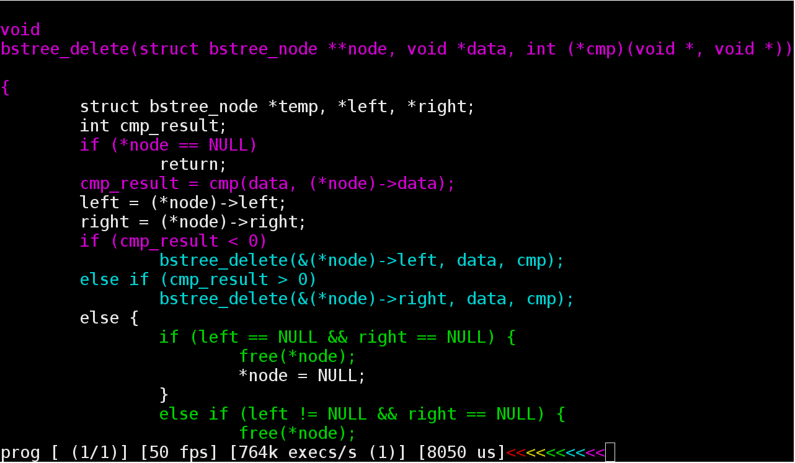

░█▀▀░░░▀█▀░▀█▀░░░█▀▄░█░█░█▀█ ░█░░░░░░█░░░█░░░░█▀▄░█░█░█░█ ░▀▀▀░░░▀▀▀░░▀░░░░▀░▀░▀▀▀░▀░▀
C It Run lets you watch code execute. It tries to help programmers get an intuitive feel for their programs.
The main advantages to C It Run are that hot execution paths can be easily identified and that execution flow can be summarized at a glance.

The C/C++ programming languages are supported.
A manual is provided for each included executable:
The following reports are available: